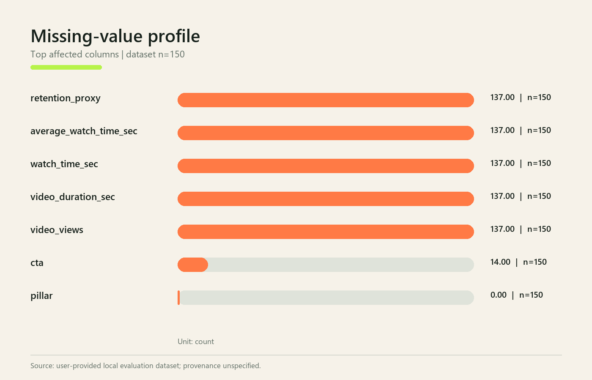
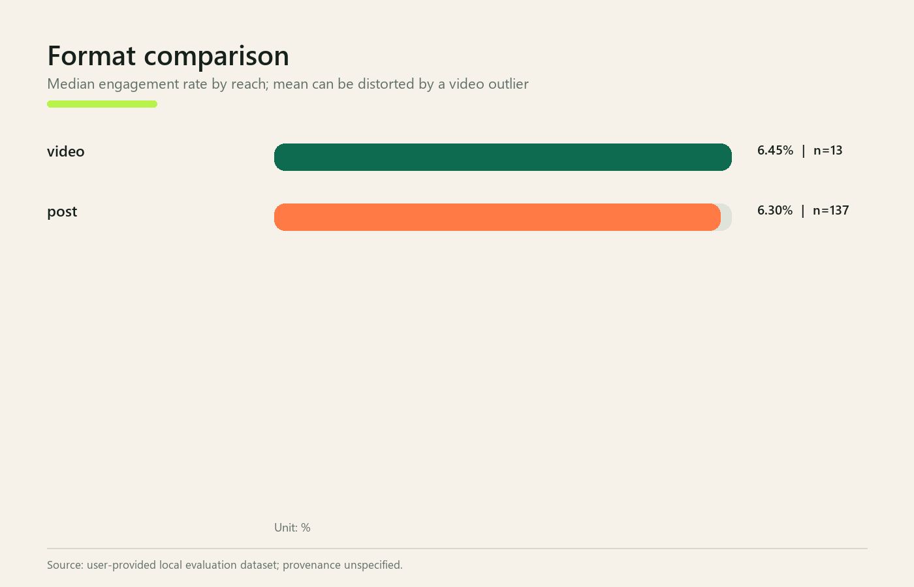
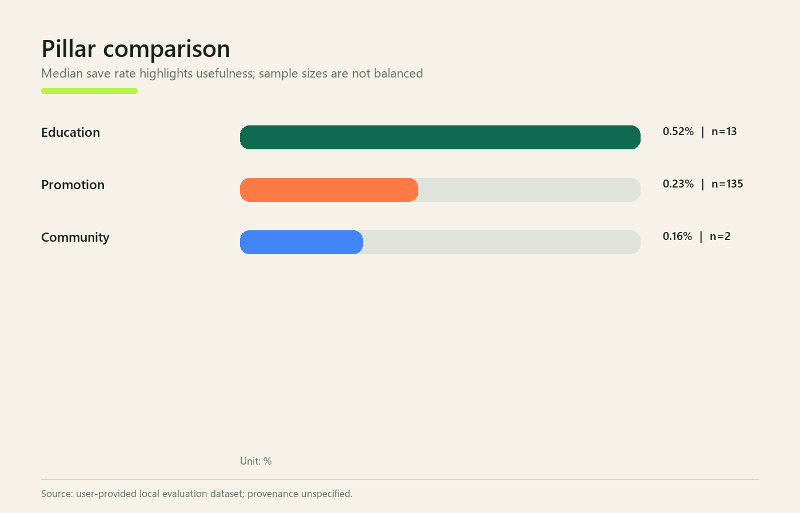
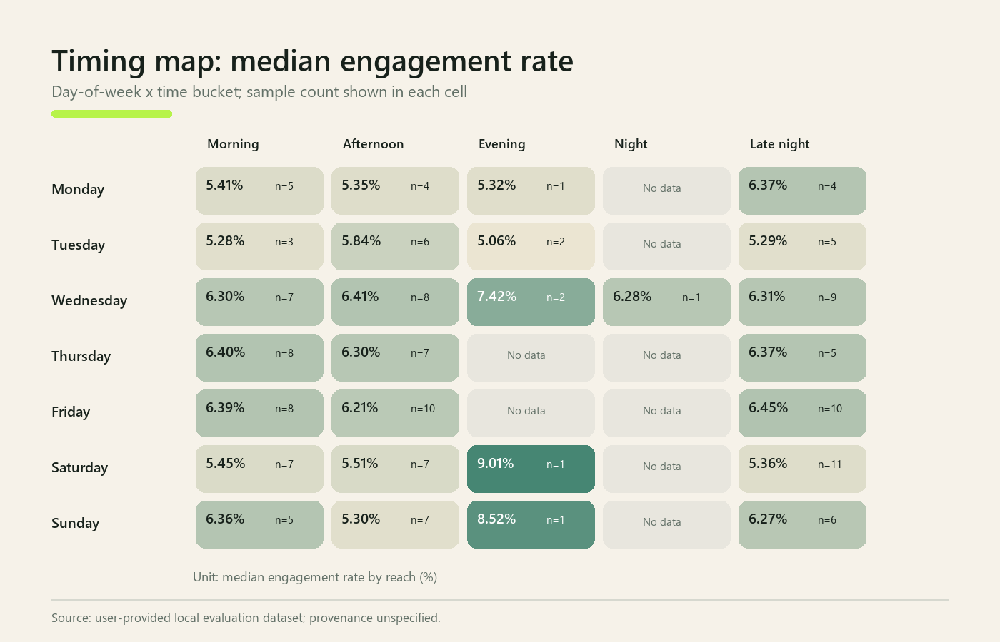
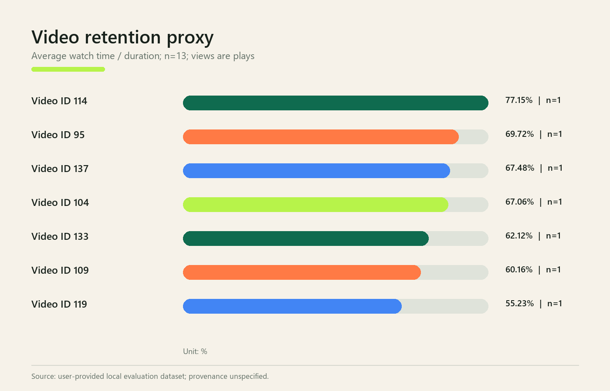

PERFORMANCE ANALYSIS • STRATEGY REVISION
From repetitive promotion
to useful momentum.
Evidence-linked analysis, a measured seven-day pilot, and seven finished local assets for BudgetFitzz.
Run status READYProvider LOCALPaid generation ₹0Validation PASS
EXECUTIVE OVERVIEW
What the baseline actually says
Provenance: user-provided local evaluation dataset; original provenance unspecified. Business context is an explicit project assumption.
DATA QUALITY
Trust the result by seeing the limits
Audit flags

METRIC CONTRACT
Comparable where valid.
Cautious everywhere else.
Static-post video fields stay structurally unavailable. Views are plays, not unique people. Groups n<3 are anecdotal; n=3–4 directional; n≥5 cautious.
PERFORMANCE
Means tell the wrong video story




FAILURE DIAGNOSIS
Not “promotion is bad.”
Imbalance is the failure.
REVISED STRATEGY
Every change carries an evidence ID
SEVEN-DAY PILOT
Exactly 5 posts + 2 videos
STATIC CREATIVES
Five finished 4:5 assets
SHORT VIDEOS
First-second hooks. Real motion. NVENC.
BEFORE / AFTER
Observed baseline vs test design
AGENTIC WORKFLOW
State, retries, evidence, repair
Raw inputs
→Audit + metrics
→Diagnosis
→Strategy + plan
→Assets + QA
→Package
FINAL VALIDATION
Production gate passed.
Dimensions, codecs, plan counts, spend, traceability, paths, PDF, demo, and package integrity are checked automatically.
—checks passed